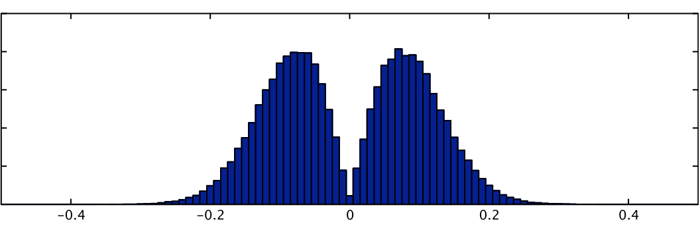

Alternative Group Level Statistics with Basis Functions
Summary statistics of a basis function fit can be calculated and passed up for higher-level analysis but only using non-parametric inference, such as randomise, due to the fact that the null distribution of these statistics is often highly non-Gaussian. For example, the signed RMS statistic (representing a form of "energy" of the linear combination, and as used in Calhoun et al, NeuroImage 2004) is:
sign(PE1)*sqrt(A1*PE12 + A2*PE22 + ...)
where PE1, PE2, etc are the parameter estimates associated EV1, EV2, etc., (all part of a basis function set for a single condition) and A1, A2, etc are weighting functions, normally equal to the RMS of the respective EVs. The null distribution for this statistic is shown below, next to that of PE1 (where the latter is truly Gaussian). This highlights severity of the non-Gaussianity in such statistics.
 |
|
RMS statistic |
PE1 |

One exception to the use of non-parametric inference for such statistics is where there is a large number of subjects (or sessions) so that the Central Limit Theorem can be invoked. For highly non-Gaussian distributions this can require a significant number of subjects.
Once a scalar statistic has been calculated from each first level result, the collection of such images can be merged with fslmerge and then passed into randomise for non-parametric testing. Note that in order to avoid problems with non-differential contrasts (e.g. single group averages) the statistic should be made to be symmetric under the null hypothesis, such as was done with the sign(PE1) term above.
As there is no single statistic of universal interest there are no standard tools for calculating these at present. Users are recommended to use Matlab or similar tools to calculate their statistics of interest (which usually require the combination of information in the PE images and in the EV files, where the latter can be obtained from the design.mat within FEAT).